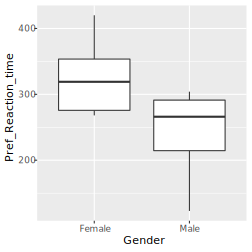
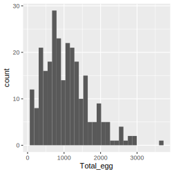
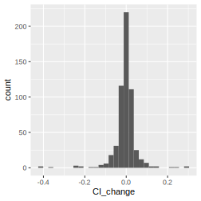
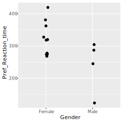
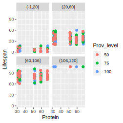
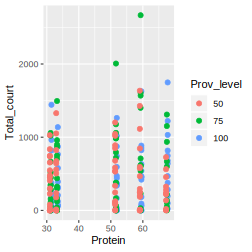
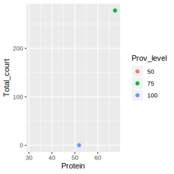
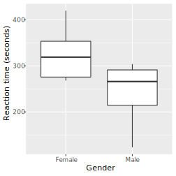
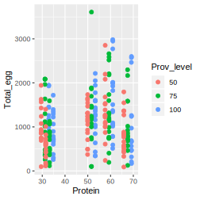

Chapter 7 What are the effects of dietary restriction?
## Load the libraries we use
library(dplyr)
library(ggplot2)
library(readr)
library(stringr)
library(lubridate)
library(skimr)
library(tidyr)
library(ggbeeswarm)
library(taxize)
library(broom)
library(forcats)
A general article about dietary restriction (DR): https://www.nia.nih.gov/health/calorie-restriction-and-fasting-diets-what-do-we-know
The case study article: Reconciling nutritional geometry with classical dietary restriction: effects of nutrient intake, not calories, on survival and reproduction. Moatt JP, Fyfe MA, Heap E, Mitchell LJM, Moon F, Walling CA (2018) Aging Cell, Volume 18, e12868.
Article: https://doi.org/10.1111/acel.12868
Data: https://doi.org/10.5061/dryad.g12p0j2
Abstract: “Here, using a novel nonmodel vertebrate system (the stickleback fish, Gasterosteus aculeatus), we test the effect of macronutrient versus calorie intake on key fitness‐related traits, both using the GF and avoiding dietary dilution. We find that the intake of macronutrients rather than calories determines both mortality risk and reproduction. Male mortality risk was lowest on intermediate lipid intakes, and female risk was generally reduced by low protein intakes. The effect of macronutrient intake on reproduction was similar between the sexes, with high protein intakes maximizing reproduction.”
A discussion of these features of the case study data (put info in a box? A new type of box?):
The number of variables (columns) they contain. The number of observations (rows). If and how many of the variables describe experimental manipulations. The amount of correlation among the variables. How independent are the observations.
7.1 Before working in R
Question: How does diet composition and amount of food individually and in combination affect individual characteristics related to health and fitness?
Hypotheses/predictions:
- Fitness: “mortality”
- Fitness: “reproductive behaviour (time spent courting)”
- Fitness: “Female reproduction (total egg production)”
- Health: “We use change in fish length as our measure of growth.”
- Health: “As a proxy for overall health, we use body condition index, which is a measure of the weight of an individual relative to its length”
Study methods and design (numbers of “things”) “We fed 300 male and 300 female individually housed three‐spine sticklebacks one of five diets varying in protein and lipid content (Table 2) at one of three provisioning levels (100%, 75% or 50% of ad lib), therefore using a restriction of food availability rather than a dilution of the diets to achieve calorie restriction. This gave a total of 15 dietary treatments (see methods and supplementary materials for full details). Fish were maintained on diets for life and measured for numerous traits including survival, reproductive investment, growth and body condition. Given the broad range of traits examined, we present data for each trait separately, with an accompanying short interpretation section.”
“Mortality was checked twice daily and date of death was recorded. We quantified male lifetime reproductive investment as the total time spent courting (in seconds) across all courtship attempts. Males were also assayed for other common reproductive behaviours (e.g., territory defence, nesting and nuptial coloration—see supplementary methods and analysis). Female lifetime reproductive investment was taken as the total number of eggs produced). Fish were monitored for growth (length (mm) and weight (g)) approximately every 1–2 months (Supporting Information Table S26). From these measures, body condition (overall health) was also quantified (Moatt et al., 2017 and supplementary methods).”
Q: How many fish per treatment combination? A. 20
Type of response variable:
- Mortality—binary, dead or alive.
- Time spent courting—cannot be negative, will likely be numeric, may be distrete (e.g. 10 mins or 20 minutes) or continuous, ratio type.
- Female reproduction egg production—count type data, not negative, discrete (integers), ratio type.
- Change in fish length—could be negative or positive, ratio type.
- Body condition index (a measure of the weight of an individual relative to its length)-only positive, likely continuous, ratio type.
Explanatory variables:
- A variable about the diet composition treatment.
- A variable about the provisioning level treatment.
- Perhaps some others.
Predictions: What were the predictions?
Data birth:
- Number of variables: not too many as a designed experiment with clear question.
- Number of observations: number of fish (they were “individually housed”, and assigned treatment on an individual level).
- Variables describing manipulations: yes, two.
- Correlation among variables: low (factorial experiment, though some imbalance likely)
- Independence of observations: there may be multiple observations per fish (repeated measures). Fish may share mothers, fathers, and other pre-experiment conditions.
Secure resources and perform study
Which datafiles: Have a look at the data files on the dryad repository. Which data files are required for which response variable?
## Parsed with column specification:
## cols(
## .default = col_double(),
## FID = col_character(),
## Sex = col_character(),
## Size = col_character()
## )## See spec(...) for full column specifications.## Parsed with column specification:
## cols(
## FID = col_character(),
## Family = col_character(),
## Shelf_stack = col_character(),
## Diet = col_double(),
## Level = col_double(),
## Size = col_character(),
## Trial = col_double(),
## Days_breeding = col_double(),
## P_day = col_double(),
## P2_day = col_double(),
## L_day = col_double(),
## L2_day = col_double(),
## Mean_react = col_double(),
## Total_ZZ = col_double(),
## Total_lead = col_double(),
## Total_court = col_double()
## )## Parsed with column specification:
## cols(
## FID = col_character(),
## Family = col_character(),
## Stack_shelf = col_character(),
## Diet = col_double(),
## Level = col_double(),
## Size = col_character(),
## P_day = col_double(),
## P2_day = col_double(),
## L_day = col_double(),
## L2_day = col_double(),
## Days_breeding = col_double(),
## Number_clutches = col_double(),
## mean_number = col_double(),
## Total_egg = col_double()
## )## Parsed with column specification:
## cols(
## FID = col_character(),
## Shelf_stack = col_character(),
## Sex = col_character(),
## Diet = col_double(),
## Level = col_double(),
## Size = col_character(),
## Batch = col_double(),
## P_day = col_double(),
## P2_day = col_double(),
## L_day = col_double(),
## L2_day = col_double(),
## ZP = col_double(),
## ZP2 = col_double(),
## ZL = col_double(),
## ZL2 = col_double(),
## Ln = col_double(),
## Wt = col_double(),
## CI = col_double()
## )Variables in the datafiles: Look at the data file key word document in the dryad repository.
Which variables tell us about the experimental design (including the explantory variables) and when observations were made?
- FID – Unique ID for each individual.
- Diet – Diet Treatment (Diet P:L: 1 = 10.2:1, 2 = 4.6:1, 3 = 2.5:1, 4 = 8.5:1, 5 = 1.6:1).
- Sex – Sex of individual (M = male, F = female).
- Size – Size classification of individual (L = large, S = Small).
- Level – Provisioning level, values represent percentages of monthly ad libitum monitoring.
- Week_F – Experimental week.
- Batch – Weighing batch.
There are numerous other variables in the datasets. We will look at them if and when we need to.
Which variables in which dataset can be used to calculate each of the five response variables?
- Mortality:
status, 0 = alive, 1 = Dead, inMoatt_et_al_Data_S1.csv - Time spent courting:
Total_court– Total time courting across all trials, inMoatt_et_al_Data_S5.csv. - Female reproduction egg production:
Total_egg– Total number of eggs produced, inMoatt_et_al_Data_S6.csv. - Change in fish length: Ln – Length of individual in mm, in
Moatt_et_al_Data_S15.csv. - Body condition index: CI – Condition Index for each individual,
Moatt_et_al_Data_S15.csv.
Number of rows and columns in the dataset: (By looking at the datasets in a spreadsheet programme)
Moatt_et_al_Data_S1.csv: 33’049 rows, 24 variablesMoatt_et_al_Data_S5.csv: 228, 16Moatt_et_al_Data_S6.csv: 269, 14Moatt_et_al_Data_S15.csv:6000, 18
7.2 After importing the data into R
- number of rows and columns: as expected
- tidy: all four datasets appear tidy, at the moment.
- variable types: all as expected
- fix dates: none present
Make more informative variable names (and discard variables not obviously of use):
courtship <- courtship %>%
select(Fish_ID=FID, Family, Shelf_stack, Diet_comp=Diet,
Prov_level=Level, Fish_size=Size, Trial, Total_court)
eggs <- eggs %>%
select(Fish_ID=FID, Family, Shelf_stack=Stack_shelf, Diet_comp=Diet,
Prov_level=Level, Fish_size=Size, Total_egg)
length_weight_condition <- length_weight_condition %>%
select(Fish_ID=FID, Shelf_stack, Diet_comp=Diet, Sex=Sex,
Batch,
Prov_level=Level, Fish_size=Size, Length=Ln, Weigth=Wt, Cond_index=CI)
mortality <- mortality %>%
select(Fish_ID=FID, Diet_comp=Diet, Sex,
Prov_level=Level, Fish_size=Size, Week=Week_F, Status)Replace codes with informative words:
courtship <- courtship %>%
mutate(Diet_comp = case_when(Diet_comp == 1 ~ "10.2:1",
Diet_comp == 2 ~ "4.6:1",
Diet_comp == 3 ~ "2.5:1",
Diet_comp == 4 ~ "8.5:1",
Diet_comp == 5 ~ "1.6:1"),
Fish_size = case_when(Fish_size == "S" ~ "Small",
Fish_size == "L" ~ "Large"))
eggs <- eggs %>%
mutate(Diet_comp = case_when(Diet_comp == 1 ~ "10.2:1",
Diet_comp == 2 ~ "4.6:1",
Diet_comp == 3 ~ "2.5:1",
Diet_comp == 4 ~ "8.5:1",
Diet_comp == 5 ~ "1.6:1"),
Fish_size = case_when(Fish_size == "S" ~ "Small",
Fish_size == "L" ~ "Large"))
length_weight_condition <- length_weight_condition %>%
mutate(Diet_comp = case_when(Diet_comp == 1 ~ "10.2:1",
Diet_comp == 2 ~ "4.6:1",
Diet_comp == 3 ~ "2.5:1",
Diet_comp == 4 ~ "8.5:1",
Diet_comp == 5 ~ "1.6:1"),
Fish_size = case_when(Fish_size == "S" ~ "Small",
Fish_size == "L" ~ "Large"),
Sex = case_when(Sex == "M" ~ "Male",
Sex == "F" ~ "Female"))
mortality <- mortality %>%
mutate(Diet_comp = case_when(Diet_comp == 1 ~ "10.2:1",
Diet_comp == 2 ~ "4.6:1",
Diet_comp == 3 ~ "2.5:1",
Diet_comp == 4 ~ "8.5:1",
Diet_comp == 5 ~ "1.6:1"),
Fish_size = case_when(Fish_size == "S" ~ "Small",
Fish_size == "L" ~ "Large"),
Sex = case_when(Sex == "M" ~ "Male",
Sex == "F" ~ "Female"),
Status = case_when(Status == 0 ~ "alive",
Status == 1 ~ "dead"))7.2.1 Checking for duplicates
Question: which of the four datasets contains an odd duplicate entry? And which fish is involved? What should we do next?
## [1] 0## [1] 0## [1] 0## [1] 1## # A tibble: 1 x 7
## Fish_ID Diet_comp Sex Prov_level Fish_size Week Status
## <chr> <chr> <chr> <dbl> <chr> <dbl> <chr>
## 1 LR504 1.6:1 Male 100 Small 2 alive## # A tibble: 2 x 7
## Fish_ID Diet_comp Sex Prov_level Fish_size Week Status
## <chr> <chr> <chr> <dbl> <chr> <dbl> <chr>
## 1 LR504 1.6:1 Male 100 Small 2 dead
## 2 LR504 1.6:1 Male 100 Small 2 alive## # A tibble: 4 x 7
## Fish_ID Diet_comp Sex Prov_level Fish_size Week Status
## <chr> <chr> <chr> <dbl> <chr> <dbl> <chr>
## 1 LR504 1.6:1 Male 100 Small 1 alive
## 2 LR504 1.6:1 Male 100 Small 2 dead
## 3 LR504 1.6:1 Male 100 Small 2 alive
## 4 LR504 1.6:1 Male 100 Small 4 deadIn the mortality dataset fish LR504 has two record for week 2.
7.2.2 NAs, variable entries, e.g. levels of characters, ranges of numerics, numbers of “things”*
How many missing values in the courtship dataset (remember to reduce the variables to those mentioned above)?
Which variable(s) contain missing values?
Which fish have missing values?
How many different entries are there in the Shelf_stack variable?
What are the mean and median of the Total_court variable?
What are the units of the Total_court variable? (From paper only, seconds)
| Name | courtship |
| Number of rows | 228 |
| Number of columns | 8 |
| _______________________ | |
| Column type frequency: | |
| character | 5 |
| numeric | 3 |
| ________________________ | |
| Group variables | None |
Variable type: character
| skim_variable | n_missing | complete_rate | min | max | empty | n_unique | whitespace |
|---|---|---|---|---|---|---|---|
| Fish_ID | 0 | 1 | 5 | 5 | 0 | 228 | 0 |
| Family | 0 | 1 | 4 | 4 | 0 | 22 | 0 |
| Shelf_stack | 0 | 1 | 2 | 2 | 0 | 36 | 0 |
| Diet_comp | 0 | 1 | 5 | 6 | 0 | 5 | 0 |
| Fish_size | 0 | 1 | 5 | 5 | 0 | 2 | 0 |
Variable type: numeric
| skim_variable | n_missing | complete_rate | mean | sd | p0 | p25 | p50 | p75 | p100 | hist |
|---|---|---|---|---|---|---|---|---|---|---|
| Prov_level | 0 | 1 | 74.45 | 20.38 | 50 | 50 | 75 | 100 | 100 | ▇▁▇▁▇ |
| Trial | 0 | 1 | 4.57 | 2.24 | 1 | 3 | 4 | 6 | 11 | ▇▆▆▂▁ |
| Total_court | 1 | 1 | 453.23 | 456.20 | 0 | 64 | 337 | 713 | 2666 | ▇▃▁▁▁ |
## # A tibble: 1 x 8
## Fish_ID Family Shelf_stack Diet_comp Prov_level Fish_size Trial Total_court
## <chr> <chr> <chr> <chr> <dbl> <chr> <dbl> <dbl>
## 1 LR021 F117 A3 8.5:1 50 Large 1 NA228 fish IDs
| Name | eggs |
| Number of rows | 269 |
| Number of columns | 7 |
| _______________________ | |
| Column type frequency: | |
| character | 5 |
| numeric | 2 |
| ________________________ | |
| Group variables | None |
Variable type: character
| skim_variable | n_missing | complete_rate | min | max | empty | n_unique | whitespace |
|---|---|---|---|---|---|---|---|
| Fish_ID | 0 | 1 | 5 | 5 | 0 | 269 | 0 |
| Family | 0 | 1 | 4 | 4 | 0 | 20 | 0 |
| Shelf_stack | 0 | 1 | 2 | 2 | 0 | 36 | 0 |
| Diet_comp | 0 | 1 | 5 | 6 | 0 | 5 | 0 |
| Fish_size | 0 | 1 | 5 | 5 | 0 | 2 | 0 |
Variable type: numeric
| skim_variable | n_missing | complete_rate | mean | sd | p0 | p25 | p50 | p75 | p100 | hist |
|---|---|---|---|---|---|---|---|---|---|---|
| Prov_level | 0 | 1 | 75.09 | 20.32 | 50 | 50 | 75 | 100 | 100 | ▇▁▇▁▇ |
| Total_egg | 1 | 1 | 1069.56 | 631.56 | 66 | 609 | 1001 | 1402 | 3608 | ▇▇▃▁▁ |
## # A tibble: 1 x 7
## Fish_ID Family Shelf_stack Diet_comp Prov_level Fish_size Total_egg
## <chr> <chr> <chr> <chr> <dbl> <chr> <dbl>
## 1 LR212 F121 D3 2.5:1 75 Small NA269 fish IDs
| Name | length_weight_condition |
| Number of rows | 6000 |
| Number of columns | 10 |
| _______________________ | |
| Column type frequency: | |
| character | 5 |
| numeric | 5 |
| ________________________ | |
| Group variables | None |
Variable type: character
| skim_variable | n_missing | complete_rate | min | max | empty | n_unique | whitespace |
|---|---|---|---|---|---|---|---|
| Fish_ID | 0 | 1 | 5 | 5 | 0 | 600 | 0 |
| Shelf_stack | 0 | 1 | 2 | 2 | 0 | 36 | 0 |
| Diet_comp | 0 | 1 | 5 | 6 | 0 | 5 | 0 |
| Sex | 0 | 1 | 4 | 6 | 0 | 2 | 0 |
| Fish_size | 0 | 1 | 5 | 5 | 0 | 2 | 0 |
Variable type: numeric
| skim_variable | n_missing | complete_rate | mean | sd | p0 | p25 | p50 | p75 | p100 | hist |
|---|---|---|---|---|---|---|---|---|---|---|
| Batch | 0 | 1.00 | 5.50 | 2.87 | 1.00 | 3.00 | 5.50 | 8.00 | 10.00 | ▇▇▇▇▇ |
| Prov_level | 0 | 1.00 | 75.00 | 20.41 | 50.00 | 50.00 | 75.00 | 100.00 | 100.00 | ▇▁▇▁▇ |
| Length | 2088 | 0.65 | 47.58 | 9.60 | 3.75 | 40.00 | 48.00 | 54.50 | 78.00 | ▁▁▇▇▁ |
| Weigth | 2088 | 0.65 | 1.61 | 1.01 | 0.12 | 0.74 | 1.47 | 2.27 | 6.19 | ▇▆▂▁▁ |
| Cond_index | 2088 | 0.65 | 0.00 | 0.15 | -0.84 | -0.09 | 0.00 | 0.09 | 1.54 | ▁▇▂▁▁ |
| 600 fish IDs |
| Name | mortality |
| Number of rows | 33049 |
| Number of columns | 7 |
| _______________________ | |
| Column type frequency: | |
| character | 5 |
| numeric | 2 |
| ________________________ | |
| Group variables | None |
Variable type: character
| skim_variable | n_missing | complete_rate | min | max | empty | n_unique | whitespace |
|---|---|---|---|---|---|---|---|
| Fish_ID | 0 | 1 | 5 | 5 | 0 | 594 | 0 |
| Diet_comp | 0 | 1 | 5 | 6 | 0 | 5 | 0 |
| Sex | 0 | 1 | 4 | 6 | 0 | 2 | 0 |
| Fish_size | 0 | 1 | 5 | 5 | 0 | 2 | 0 |
| Status | 0 | 1 | 4 | 5 | 0 | 2 | 0 |
Variable type: numeric
| skim_variable | n_missing | complete_rate | mean | sd | p0 | p25 | p50 | p75 | p100 | hist |
|---|---|---|---|---|---|---|---|---|---|---|
| Prov_level | 0 | 1 | 74.49 | 20.43 | 50 | 50 | 75 | 100 | 100 | ▇▁▇▁▇ |
| Week | 0 | 1 | 37.84 | 26.49 | 1 | 16 | 33 | 57 | 107 | ▇▆▅▃▁ |
| 594 fish IDs |
7.3 Independence
##
## LR001 LR004 LR005 LR010 LR019 LR021 LR022 LR023 LR024 LR033 LR034 LR042 LR046
## 1 1 1 1 1 1 1 1 1 1 1 1 1
## LR048 LR049 LR052 LR056 LR057 LR060 LR062 LR064 LR069 LR070 LR071 LR072 LR077
## 1 1 1 1 1 1 1 1 1 1 1 1 1
## LR087 LR093 LR095 LR099 LR102 LR106 LR109 LR111 LR113 LR117 LR118 LR124 LR126
## 1 1 1 1 1 1 1 1 1 1 1 1 1
## LR129 LR130 LR132 LR136 LR137 LR139 LR140 LR141 LR143 LR148 LR150 LR154 LR157
## 1 1 1 1 1 1 1 1 1 1 1 1 1
## LR158 LR161 LR165 LR167 LR174 LR175 LR176 LR178 LR182 LR184 LR185 LR186 LR187
## 1 1 1 1 1 1 1 1 1 1 1 1 1
## LR189 LR190 LR192 LR200 LR201 LR205 LR206 LR208 LR209 LR210 LR211 LR214 LR218
## 1 1 1 1 1 1 1 1 1 1 1 1 1
## LR221 LR224 LR226 LR227 LR230 LR235 LR238 LR244 LR246 LR247 LR248 LR249 LR257
## 1 1 1 1 1 1 1 1 1 1 1 1 1
## LR258 LR259 LR264 LR265 LR268 LR269 LR273 LR276 LR277 LR279 LR283 LR284 LR285
## 1 1 1 1 1 1 1 1 1 1 1 1 1
## LR294 LR299 LR300 LR302 LR303 LR304 LR305 LR311 LR312 LR314 LR315 LR322 LR327
## 1 1 1 1 1 1 1 1 1 1 1 1 1
## LR328 LR329 LR331 LR332 LR333 LR334 LR340 LR347 LR348 LR352 LR353 LR358 LR360
## 1 1 1 1 1 1 1 1 1 1 1 1 1
## LR361 LR363 LR364 LR366 LR367 LR368 LR372 LR373 LR374 LR379 LR380 LR381 LR383
## 1 1 1 1 1 1 1 1 1 1 1 1 1
## LR384 LR385 LR386 LR390 LR391 LR392 LR394 LR395 LR402 LR404 LR405 LR406 LR412
## 1 1 1 1 1 1 1 1 1 1 1 1 1
## LR413 LR415 LR416 LR420 LR421 LR422 LR423 LR427 LR429 LR430 LR438 LR440 LR442
## 1 1 1 1 1 1 1 1 1 1 1 1 1
## LR445 LR452 LR453 LR454 LR456 LR459 LR460 LR462 LR463 LR464 LR465 LR471 LR472
## 1 1 1 1 1 1 1 1 1 1 1 1 1
## LR473 LR475 LR477 LR478 LR480 LR481 LR485 LR489 LR493 LR500 LR502 LR503 LR505
## 1 1 1 1 1 1 1 1 1 1 1 1 1
## LR516 LR518 LR524 LR532 LR537 LR539 LR541 LR542 LR544 LR546 LR549 LR551 LR552
## 1 1 1 1 1 1 1 1 1 1 1 1 1
## LR555 LR557 LR558 LR559 LR560 LR570 LR572 LR573 LR574 LR577 LR578 LR581 LR584
## 1 1 1 1 1 1 1 1 1 1 1 1 1
## LR585 LR591 LR594 LR596 LR597 LR598 LR600
## 1 1 1 1 1 1 1##
## LR002 LR003 LR006 LR007 LR008 LR009 LR012 LR013 LR014 LR016 LR025 LR027 LR029
## 1 1 1 1 1 1 1 1 1 1 1 1 1
## LR030 LR031 LR032 LR035 LR037 LR039 LR042 LR043 LR045 LR053 LR055 LR058 LR059
## 1 1 1 1 1 1 1 1 1 1 1 1 1
## LR065 LR066 LR067 LR075 LR076 LR079 LR080 LR081 LR082 LR083 LR084 LR085 LR086
## 1 1 1 1 1 1 1 1 1 1 1 1 1
## LR088 LR089 LR090 LR091 LR094 LR096 LR097 LR100 LR101 LR104 LR105 LR107 LR108
## 1 1 1 1 1 1 1 1 1 1 1 1 1
## LR110 LR112 LR114 LR115 LR116 LR119 LR120 LR121 LR122 LR125 LR127 LR128 LR131
## 1 1 1 1 1 1 1 1 1 1 1 1 1
## LR134 LR138 LR142 LR144 LR145 LR146 LR149 LR151 LR152 LR153 LR155 LR159 LR160
## 1 1 1 1 1 1 1 1 1 1 1 1 1
## LR162 LR163 LR164 LR169 LR170 LR172 LR173 LR177 LR181 LR183 LR191 LR193 LR194
## 1 1 1 1 1 1 1 1 1 1 1 1 1
## LR195 LR196 LR197 LR207 LR212 LR213 LR215 LR216 LR217 LR219 LR220 LR223 LR225
## 1 1 1 1 1 1 1 1 1 1 1 1 1
## LR228 LR229 LR231 LR232 LR233 LR234 LR236 LR237 LR240 LR241 LR242 LR245 LR250
## 1 1 1 1 1 1 1 1 1 1 1 1 1
## LR252 LR253 LR254 LR256 LR260 LR261 LR262 LR266 LR267 LR270 LR271 LR272 LR275
## 1 1 1 1 1 1 1 1 1 1 1 1 1
## LR278 LR282 LR286 LR288 LR289 LR290 LR291 LR292 LR293 LR294 LR295 LR296 LR297
## 1 1 1 1 1 1 1 1 1 1 1 1 1
## LR298 LR306 LR307 LR309 LR313 LR316 LR317 LR320 LR321 LR323 LR324 LR325 LR326
## 1 1 1 1 1 1 1 1 1 1 1 1 1
## LR338 LR342 LR343 LR346 LR349 LR354 LR355 LR356 LR357 LR362 LR364 LR365 LR369
## 1 1 1 1 1 1 1 1 1 1 1 1 1
## LR370 LR371 LR382 LR388 LR389 LR393 LR396 LR398 LR400 LR407 LR409 LR410 LR411
## 1 1 1 1 1 1 1 1 1 1 1 1 1
## LR414 LR417 LR418 LR419 LR428 LR431 LR433 LR434 LR435 LR436 LR437 LR443 LR444
## 1 1 1 1 1 1 1 1 1 1 1 1 1
## LR446 LR447 LR448 LR449 LR450 LR451 LR457 LR458 LR461 LR466 LR467 LR469 LR470
## 1 1 1 1 1 1 1 1 1 1 1 1 1
## LR474 LR476 LR482 LR484 LR488 LR490 LR491 LR492 LR494 LR495 LR497 LR498 LR501
## 1 1 1 1 1 1 1 1 1 1 1 1 1
## LR506 LR507 LR509 LR510 LR512 LR513 LR514 LR517 LR519 LR520 LR522 LR523 LR525
## 1 1 1 1 1 1 1 1 1 1 1 1 1
## LR526 LR527 LR528 LR530 LR531 LR534 LR535 LR536 LR538 LR540 LR543 LR545 LR553
## 1 1 1 1 1 1 1 1 1 1 1 1 1
## LR554 LR556 LR561 LR562 LR563 LR565 LR566 LR568 LR569 LR571 LR575 LR576 LR579
## 1 1 1 1 1 1 1 1 1 1 1 1 1
## LR580 LR581 LR582 LR583 LR587 LR588 LR592 LR595 LR599
## 1 1 1 1 1 1 1 1 1##
## LR001 LR002 LR003 LR004 LR005 LR006 LR007 LR008 LR009 LR010 LR011 LR012 LR013
## 10 10 10 10 10 10 10 10 10 10 10 10 10
## LR014 LR015 LR016 LR017 LR018 LR019 LR020 LR021 LR022 LR023 LR024 LR025 LR026
## 10 10 10 10 10 10 10 10 10 10 10 10 10
## LR027 LR028 LR029 LR030 LR031 LR032 LR033 LR034 LR035 LR036 LR037 LR038 LR039
## 10 10 10 10 10 10 10 10 10 10 10 10 10
## LR040 LR041 LR042 LR043 LR044 LR045 LR046 LR047 LR048 LR049 LR050 LR051 LR052
## 10 10 10 10 10 10 10 10 10 10 10 10 10
## LR053 LR054 LR055 LR056 LR057 LR058 LR059 LR060 LR061 LR062 LR063 LR064 LR065
## 10 10 10 10 10 10 10 10 10 10 10 10 10
## LR066 LR067 LR068 LR069 LR070 LR071 LR072 LR073 LR074 LR075 LR076 LR077 LR078
## 10 10 10 10 10 10 10 10 10 10 10 10 10
## LR079 LR080 LR081 LR082 LR083 LR084 LR085 LR086 LR087 LR088 LR089 LR090 LR091
## 10 10 10 10 10 10 10 10 10 10 10 10 10
## LR092 LR093 LR094 LR095 LR096 LR097 LR098 LR099 LR100 LR101 LR102 LR103 LR104
## 10 10 10 10 10 10 10 10 10 10 10 10 10
## LR105 LR106 LR107 LR108 LR109 LR110 LR111 LR112 LR113 LR114 LR115 LR116 LR117
## 10 10 10 10 10 10 10 10 10 10 10 10 10
## LR118 LR119 LR120 LR121 LR122 LR123 LR124 LR125 LR126 LR127 LR128 LR129 LR130
## 10 10 10 10 10 10 10 10 10 10 10 10 10
## LR131 LR132 LR133 LR134 LR135 LR136 LR137 LR138 LR139 LR140 LR141 LR142 LR143
## 10 10 10 10 10 10 10 10 10 10 10 10 10
## LR144 LR145 LR146 LR147 LR148 LR149 LR150 LR151 LR152 LR153 LR154 LR155 LR156
## 10 10 10 10 10 10 10 10 10 10 10 10 10
## LR157 LR158 LR159 LR160 LR161 LR162 LR163 LR164 LR165 LR166 LR167 LR168 LR169
## 10 10 10 10 10 10 10 10 10 10 10 10 10
## LR170 LR171 LR172 LR173 LR174 LR175 LR176 LR177 LR178 LR179 LR180 LR181 LR182
## 10 10 10 10 10 10 10 10 10 10 10 10 10
## LR183 LR184 LR185 LR186 LR187 LR188 LR189 LR190 LR191 LR192 LR193 LR194 LR195
## 10 10 10 10 10 10 10 10 10 10 10 10 10
## LR196 LR197 LR198 LR199 LR200 LR201 LR202 LR203 LR204 LR205 LR206 LR207 LR208
## 10 10 10 10 10 10 10 10 10 10 10 10 10
## LR209 LR210 LR211 LR212 LR213 LR214 LR215 LR216 LR217 LR218 LR219 LR220 LR221
## 10 10 10 10 10 10 10 10 10 10 10 10 10
## LR222 LR223 LR224 LR225 LR226 LR227 LR228 LR229 LR230 LR231 LR232 LR233 LR234
## 10 10 10 10 10 10 10 10 10 10 10 10 10
## LR235 LR236 LR237 LR238 LR239 LR240 LR241 LR242 LR243 LR244 LR245 LR246 LR247
## 10 10 10 10 10 10 10 10 10 10 10 10 10
## LR248 LR249 LR250 LR251 LR252 LR253 LR254 LR255 LR256 LR257 LR258 LR259 LR260
## 10 10 10 10 10 10 10 10 10 10 10 10 10
## LR261 LR262 LR263 LR264 LR265 LR266 LR267 LR268 LR269 LR270 LR271 LR272 LR273
## 10 10 10 10 10 10 10 10 10 10 10 10 10
## LR274 LR275 LR276 LR277 LR278 LR279 LR280 LR281 LR282 LR283 LR284 LR285 LR286
## 10 10 10 10 10 10 10 10 10 10 10 10 10
## LR287 LR288 LR289 LR290 LR291 LR292 LR293 LR294 LR295 LR296 LR297 LR298 LR299
## 10 10 10 10 10 10 10 10 10 10 10 10 10
## LR300 LR301 LR302 LR303 LR304 LR305 LR306 LR307 LR308 LR309 LR310 LR311 LR312
## 10 10 10 10 10 10 10 10 10 10 10 10 10
## LR313 LR314 LR315 LR316 LR317 LR318 LR319 LR320 LR321 LR322 LR323 LR324 LR325
## 10 10 10 10 10 10 10 10 10 10 10 10 10
## LR326 LR327 LR328 LR329 LR330 LR331 LR332 LR333 LR334 LR335 LR336 LR337 LR338
## 10 10 10 10 10 10 10 10 10 10 10 10 10
## LR339 LR340 LR341 LR342 LR343 LR344 LR345 LR346 LR347 LR348 LR349 LR350 LR351
## 10 10 10 10 10 10 10 10 10 10 10 10 10
## LR352 LR353 LR354 LR355 LR356 LR357 LR358 LR359 LR360 LR361 LR362 LR363 LR364
## 10 10 10 10 10 10 10 10 10 10 10 10 10
## LR365 LR366 LR367 LR368 LR369 LR370 LR371 LR372 LR373 LR374 LR375 LR376 LR377
## 10 10 10 10 10 10 10 10 10 10 10 10 10
## LR378 LR379 LR380 LR381 LR382 LR383 LR384 LR385 LR386 LR387 LR388 LR389 LR390
## 10 10 10 10 10 10 10 10 10 10 10 10 10
## LR391 LR392 LR393 LR394 LR395 LR396 LR397 LR398 LR399 LR400 LR401 LR402 LR403
## 10 10 10 10 10 10 10 10 10 10 10 10 10
## LR404 LR405 LR406 LR407 LR408 LR409 LR410 LR411 LR412 LR413 LR414 LR415 LR416
## 10 10 10 10 10 10 10 10 10 10 10 10 10
## LR417 LR418 LR419 LR420 LR421 LR422 LR423 LR424 LR425 LR426 LR427 LR428 LR429
## 10 10 10 10 10 10 10 10 10 10 10 10 10
## LR430 LR431 LR432 LR433 LR434 LR435 LR436 LR437 LR438 LR439 LR440 LR441 LR442
## 10 10 10 10 10 10 10 10 10 10 10 10 10
## LR443 LR444 LR445 LR446 LR447 LR448 LR449 LR450 LR451 LR452 LR453 LR454 LR455
## 10 10 10 10 10 10 10 10 10 10 10 10 10
## LR456 LR457 LR458 LR459 LR460 LR461 LR462 LR463 LR464 LR465 LR466 LR467 LR468
## 10 10 10 10 10 10 10 10 10 10 10 10 10
## LR469 LR470 LR471 LR472 LR473 LR474 LR475 LR476 LR477 LR478 LR479 LR480 LR481
## 10 10 10 10 10 10 10 10 10 10 10 10 10
## LR482 LR483 LR484 LR485 LR486 LR487 LR488 LR489 LR490 LR491 LR492 LR493 LR494
## 10 10 10 10 10 10 10 10 10 10 10 10 10
## LR495 LR496 LR497 LR498 LR499 LR500 LR501 LR502 LR503 LR504 LR505 LR506 LR507
## 10 10 10 10 10 10 10 10 10 10 10 10 10
## LR508 LR509 LR510 LR511 LR512 LR513 LR514 LR515 LR516 LR517 LR518 LR519 LR520
## 10 10 10 10 10 10 10 10 10 10 10 10 10
## LR521 LR522 LR523 LR524 LR525 LR526 LR527 LR528 LR529 LR530 LR531 LR532 LR533
## 10 10 10 10 10 10 10 10 10 10 10 10 10
## LR534 LR535 LR536 LR537 LR538 LR539 LR540 LR541 LR542 LR543 LR544 LR545 LR546
## 10 10 10 10 10 10 10 10 10 10 10 10 10
## LR547 LR548 LR549 LR550 LR551 LR552 LR553 LR554 LR555 LR556 LR557 LR558 LR559
## 10 10 10 10 10 10 10 10 10 10 10 10 10
## LR560 LR561 LR562 LR563 LR564 LR565 LR566 LR567 LR568 LR569 LR570 LR571 LR572
## 10 10 10 10 10 10 10 10 10 10 10 10 10
## LR573 LR574 LR575 LR576 LR577 LR578 LR579 LR580 LR581 LR582 LR583 LR584 LR585
## 10 10 10 10 10 10 10 10 10 10 10 10 10
## LR586 LR587 LR588 LR589 LR590 LR591 LR592 LR593 LR594 LR595 LR596 LR597 LR598
## 10 10 10 10 10 10 10 10 10 10 10 10 10
## LR599 LR600
## 10 10##
## LR001 LR002 LR003 LR004 LR005 LR006 LR007 LR008 LR009 LR010 LR011 LR012 LR013
## 107 84 91 34 107 53 81 39 80 69 5 72 97
## LR014 LR015 LR016 LR017 LR018 LR019 LR020 LR021 LR022 LR023 LR024 LR025 LR026
## 62 3 73 2 3 47 2 39 44 107 91 29 10
## LR027 LR028 LR029 LR030 LR031 LR032 LR033 LR034 LR035 LR036 LR037 LR038 LR039
## 31 2 80 24 42 40 107 85 32 3 57 33 77
## LR040 LR041 LR042 LR043 LR044 LR045 LR046 LR047 LR048 LR049 LR050 LR051 LR052
## 90 2 95 40 18 77 42 17 107 107 6 2 98
## LR053 LR054 LR055 LR056 LR057 LR058 LR059 LR060 LR061 LR062 LR063 LR064 LR065
## 41 2 53 85 91 58 18 39 1 72 4 86 38
## LR066 LR067 LR068 LR069 LR070 LR071 LR072 LR073 LR074 LR075 LR076 LR077 LR078
## 58 39 25 36 86 82 62 16 2 87 73 51 6
## LR079 LR080 LR081 LR082 LR083 LR084 LR085 LR086 LR087 LR088 LR089 LR090 LR091
## 53 74 67 83 67 37 42 73 82 37 37 39 40
## LR092 LR093 LR094 LR095 LR096 LR097 LR098 LR099 LR100 LR101 LR102 LR104 LR105
## 6 40 85 32 88 30 10 87 88 95 97 82 66
## LR106 LR107 LR108 LR109 LR110 LR111 LR112 LR113 LR114 LR115 LR116 LR117 LR118
## 39 97 107 107 88 79 30 84 74 98 39 31 30
## LR119 LR120 LR121 LR122 LR123 LR124 LR125 LR126 LR127 LR128 LR129 LR130 LR131
## 79 81 77 107 7 107 38 107 94 39 33 107 90
## LR132 LR133 LR134 LR135 LR136 LR137 LR138 LR139 LR140 LR141 LR142 LR143 LR144
## 82 9 32 87 91 86 29 55 78 81 39 37 62
## LR145 LR146 LR147 LR148 LR149 LR150 LR151 LR152 LR153 LR154 LR155 LR157 LR158
## 41 32 6 107 69 33 96 85 76 37 32 88 93
## LR159 LR160 LR161 LR162 LR163 LR164 LR165 LR167 LR168 LR169 LR170 LR171 LR172
## 81 80 38 48 41 83 107 22 3 38 34 2 78
## LR173 LR174 LR175 LR176 LR177 LR178 LR179 LR180 LR181 LR182 LR183 LR184 LR185
## 33 85 33 29 33 77 5 10 42 33 38 30 107
## LR186 LR187 LR189 LR190 LR191 LR192 LR193 LR194 LR195 LR196 LR197 LR198 LR199
## 32 102 97 41 39 57 46 54 54 40 39 4 17
## LR200 LR201 LR202 LR203 LR204 LR205 LR206 LR207 LR208 LR209 LR210 LR211 LR212
## 44 88 9 38 7 27 94 38 47 91 81 107 25
## LR213 LR214 LR215 LR216 LR217 LR218 LR219 LR220 LR221 LR222 LR223 LR224 LR225
## 48 41 32 48 82 64 47 25 107 14 38 39 43
## LR226 LR227 LR228 LR229 LR230 LR231 LR232 LR233 LR234 LR235 LR236 LR237 LR238
## 87 91 28 39 70 66 84 83 90 107 58 40 80
## LR239 LR240 LR241 LR242 LR243 LR244 LR245 LR246 LR247 LR248 LR249 LR250 LR251
## 7 38 54 42 13 43 32 91 107 107 107 26 31
## LR252 LR253 LR254 LR255 LR256 LR257 LR258 LR259 LR260 LR261 LR262 LR263 LR264
## 31 53 40 4 86 107 84 44 36 32 32 1 82
## LR265 LR266 LR267 LR268 LR269 LR270 LR271 LR272 LR273 LR274 LR275 LR276 LR277
## 85 83 77 80 107 22 38 85 79 3 87 60 92
## LR278 LR279 LR281 LR282 LR283 LR284 LR285 LR286 LR287 LR288 LR289 LR290 LR291
## 37 84 4 53 35 45 41 17 2 87 34 96 84
## LR292 LR293 LR294 LR295 LR296 LR297 LR298 LR299 LR300 LR301 LR302 LR303 LR304
## 39 36 107 81 37 107 88 43 31 1 50 107 55
## LR305 LR306 LR307 LR308 LR309 LR310 LR311 LR312 LR313 LR314 LR315 LR316 LR317
## 60 32 44 2 35 1 32 45 36 99 107 82 33
## LR318 LR320 LR321 LR322 LR323 LR324 LR325 LR326 LR327 LR328 LR329 LR330 LR331
## 8 26 37 43 48 37 43 44 33 100 42 7 62
## LR332 LR333 LR334 LR335 LR336 LR337 LR338 LR339 LR340 LR341 LR342 LR343 LR344
## 84 81 107 9 2 1 39 3 31 2 41 80 9
## LR345 LR346 LR347 LR348 LR349 LR350 LR351 LR352 LR353 LR354 LR355 LR356 LR357
## 12 26 63 91 36 3 4 87 37 46 37 38 30
## LR358 LR359 LR360 LR361 LR362 LR363 LR364 LR365 LR366 LR367 LR368 LR369 LR370
## 40 40 91 107 95 82 26 32 83 107 91 87 33
## LR371 LR372 LR373 LR374 LR375 LR376 LR377 LR378 LR379 LR380 LR381 LR382 LR383
## 30 50 36 104 13 1 27 4 85 92 38 40 107
## LR384 LR385 LR386 LR387 LR388 LR389 LR390 LR391 LR392 LR393 LR394 LR395 LR396
## 83 89 75 16 78 85 92 90 48 41 107 107 28
## LR397 LR398 LR399 LR400 LR401 LR402 LR403 LR404 LR405 LR406 LR407 LR408 LR409
## 17 43 7 96 2 107 2 51 86 46 69 5 23
## LR410 LR411 LR412 LR413 LR414 LR415 LR416 LR417 LR418 LR419 LR420 LR421 LR422
## 46 33 41 73 34 97 44 33 38 31 107 107 33
## LR423 LR424 LR425 LR426 LR427 LR428 LR429 LR430 LR431 LR432 LR433 LR434 LR435
## 82 13 2 39 107 46 86 83 36 8 102 64 73
## LR436 LR437 LR438 LR439 LR440 LR441 LR442 LR443 LR444 LR445 LR446 LR447 LR448
## 29 41 69 35 34 6 107 37 79 70 22 55 55
## LR449 LR450 LR451 LR452 LR453 LR454 LR455 LR456 LR457 LR458 LR459 LR460 LR461
## 43 89 58 90 91 80 4 107 70 53 101 82 79
## LR462 LR463 LR464 LR465 LR466 LR467 LR468 LR469 LR470 LR471 LR472 LR473 LR474
## 35 52 107 107 55 22 19 49 59 107 106 35 55
## LR475 LR476 LR477 LR478 LR479 LR480 LR481 LR482 LR483 LR484 LR485 LR486 LR487
## 99 84 34 35 2 40 91 85 17 80 73 3 93
## LR488 LR489 LR490 LR491 LR492 LR493 LR494 LR495 LR496 LR497 LR498 LR499 LR500
## 55 83 73 91 97 96 73 44 1 46 41 8 90
## LR501 LR502 LR503 LR504 LR505 LR506 LR507 LR508 LR509 LR510 LR511 LR512 LR513
## 31 95 96 4 96 40 22 4 95 30 10 36 107
## LR514 LR515 LR516 LR517 LR518 LR519 LR520 LR521 LR522 LR523 LR524 LR525 LR526
## 107 11 107 79 94 36 107 17 41 82 87 51 98
## LR527 LR528 LR529 LR530 LR531 LR532 LR533 LR534 LR535 LR536 LR537 LR538 LR539
## 76 58 3 58 85 85 11 88 91 31 107 24 94
## LR540 LR541 LR542 LR543 LR544 LR545 LR546 LR547 LR548 LR549 LR550 LR551 LR552
## 30 107 83 61 51 46 41 35 5 32 3 94 107
## LR553 LR554 LR555 LR556 LR557 LR558 LR559 LR560 LR561 LR562 LR563 LR564 LR565
## 37 82 27 87 47 102 88 82 90 29 74 16 81
## LR566 LR567 LR568 LR569 LR570 LR571 LR572 LR573 LR574 LR575 LR576 LR577 LR578
## 70 11 36 69 107 33 75 75 76 39 23 39 32
## LR579 LR580 LR581 LR582 LR583 LR584 LR585 LR586 LR587 LR588 LR589 LR590 LR591
## 40 87 70 28 29 86 107 15 56 41 1 7 87
## LR592 LR593 LR594 LR595 LR596 LR597 LR598 LR599 LR600
## 89 16 107 34 107 92 31 22 917.4 Balance in experimental design
temp <- courtship %>%
group_by(Diet_comp, Prov_level) %>%
summarise(count=n(),
n_unique=length(unique(Fish_ID)))
sum(pull(temp, n_unique))## [1] 228228 Fish_IDs is what we found already for this dataset.
temp <- eggs %>%
group_by(Diet_comp, Prov_level) %>%
summarise(n(),
n_unique=length(unique(Fish_ID)))
sum(pull(temp, n_unique))## [1] 269269 Fish_IDs is what we found already for this dataset. WHY??? 21 for 2.5:1 100 21 21 Check below.
egg_ids <- unique(pull(eggs, Fish_ID))
courtship_ids <- unique(pull(courtship, Fish_ID))
length(unique(c(egg_ids, courtship_ids)))## [1] 493length_weight_condition %>%
group_by(Diet_comp, Prov_level) %>%
summarise(n(),
n_unique=length(unique(Fish_ID)))## # A tibble: 15 x 4
## Diet_comp Prov_level `n()` n_unique
## <chr> <dbl> <int> <int>
## 1 1.6:1 50 400 40
## 2 1.6:1 75 400 40
## 3 1.6:1 100 400 40
## 4 10.2:1 50 400 40
## 5 10.2:1 75 400 40
## # … with 10 more rows## [1] 60040 of each, hence 600 fish IDs
## # A tibble: 15 x 4
## Diet_comp Prov_level `n()` n_unique
## <chr> <dbl> <int> <int>
## 1 1.6:1 50 2239 39
## 2 1.6:1 75 2519 40
## 3 1.6:1 100 2258 40
## 4 10.2:1 50 1951 40
## 5 10.2:1 75 1668 39
## # … with 10 more rows39 or 40 of each (six of 39, hence 594 fish IDs)
7.5 Calculate response variable(s) (if required)
The courtship and eggs datasets already contain the response variable.
We need to calculate the response variable for the change in fish length and change in body condition from the length_weight_condition dataset, and the time of death (or no death [censored]) from the mortality dataset.
7.5.1 Time of death
temp_mortality2 <- mortality %>%
filter(Status=="alive") %>%
group_by(Fish_ID, Diet_comp, Prov_level, Sex) %>%
summarise(Lifespan=max(Week))
last_obs <- mortality %>%
group_by(Fish_ID, Diet_comp, Prov_level) %>%
summarise(Last_sample=max(Week))
mortality2 <- full_join(temp_mortality2, last_obs) %>%
mutate(Censored=ifelse(Lifespan==Last_sample, T, F),
Lifespan=ifelse(is.na(Lifespan), 0, Lifespan),
Censored=ifelse(Lifespan==0, FALSE, Censored)) %>%
ungroup() %>%
select(-Last_sample)## Joining, by = c("Fish_ID", "Diet_comp", "Prov_level")| Name | mortality2 |
| Number of rows | 594 |
| Number of columns | 6 |
| _______________________ | |
| Column type frequency: | |
| character | 3 |
| logical | 1 |
| numeric | 2 |
| ________________________ | |
| Group variables | None |
Variable type: character
| skim_variable | n_missing | complete_rate | min | max | empty | n_unique | whitespace |
|---|---|---|---|---|---|---|---|
| Fish_ID | 0 | 1.00 | 5 | 5 | 0 | 594 | 0 |
| Diet_comp | 0 | 1.00 | 5 | 6 | 0 | 5 | 0 |
| Sex | 8 | 0.99 | 4 | 6 | 0 | 2 | 0 |
Variable type: logical
| skim_variable | n_missing | complete_rate | mean | count |
|---|---|---|---|---|
| Censored | 0 | 1 | 0.09 | FAL: 541, TRU: 53 |
Variable type: numeric
| skim_variable | n_missing | complete_rate | mean | sd | p0 | p25 | p50 | p75 | p100 | hist |
|---|---|---|---|---|---|---|---|---|---|---|
| Prov_level | 0 | 1 | 75.04 | 20.46 | 50 | 50 | 75 | 100 | 100 | ▇▁▇▁▇ |
| Lifespan | 0 | 1 | 54.73 | 32.73 | 0 | 31 | 47 | 84 | 107 | ▅▇▃▅▆ |
Above, we set the eight fish that were already dead at week 1 as having a lifespan of zero.
7.5.2 Change in length
change1 <- length_weight_condition %>%
group_by(Fish_ID, Diet_comp, Prov_level) %>%
do(m1 = lm(Length ~ Batch, data=.)) %>%
tidy(m1) %>%
filter(term=="Batch") %>%
select(Fish_ID, Diet_comp, Prov_level, Length_change=estimate)Note that tidy silently drops NA coefficients.
7.5.3 Change in condition
Not quite what they did in the paper. But…
change2 <- length_weight_condition %>%
group_by(Fish_ID, Diet_comp, Prov_level) %>%
do(m1 = lm(Cond_index ~ Batch, data=.)) %>%
tidy(m1) %>%
filter(term=="Batch") %>%
select(Fish_ID, Diet_comp, Prov_level, CI_change=estimate)Note that tidy silently drops NA coefficients.
7.6 Merge all datasets together and check for correct number of rows
dd <- full_join(courtship, eggs) %>%
full_join(mortality2) %>%
full_join(change1) %>%
full_join(change2)## Joining, by = c("Fish_ID", "Family", "Shelf_stack", "Diet_comp", "Prov_level",
## "Fish_size")Joining, by = c("Fish_ID", "Diet_comp", "Prov_level")Joining, by =
## c("Fish_ID", "Diet_comp", "Prov_level")Joining, by = c("Fish_ID", "Diet_comp",
## "Prov_level")Bring in and merge the diet comp data
## Parsed with column specification:
## cols(
## Protein = col_double(),
## Lipid = col_double(),
## Diet_comp = col_character()
## )## Joining, by = "Diet_comp"7.7 Super sleuth questions
About:
- Two females doing courtship, perhaps odd?
- Some males laying eggs… a bit strange.
7.8 Inspect shapes (distributions)
## `stat_bin()` using `bins = 30`. Pick better value with `binwidth`.## Warning: Removed 367 rows containing non-finite values (stat_bin).
## `stat_bin()` using `bins = 30`. Pick better value with `binwidth`.## Warning: Removed 326 rows containing non-finite values (stat_bin).
## `stat_bin()` using `bins = 30`. Pick better value with `binwidth`.
## `stat_bin()` using `bins = 30`. Pick better value with `binwidth`.## Warning: Removed 26 rows containing non-finite values (stat_bin).
## `stat_bin()` using `bins = 30`. Pick better value with `binwidth`.## Warning: Removed 26 rows containing non-finite values (stat_bin).
7.9 Inspect relationships
“Male mortality risk was lowest on intermediate lipid intakes”.
dd %>% filter(Sex=="Male") %>%
ggplot(aes(x=Lipid, y=Lifespan, col=Prov_level)) +
geom_point(position = position_jitterdodge(jitter.width=0.05)) +
facet_wrap(~period, nrow=3)
“Female risk was generally reduced by low protein intakes.”
dd %>% filter(Sex=="Female") %>%
ggplot(aes(x=Protein, y=Lifespan, col=Prov_level)) +
geom_point(position = position_jitterdodge(jitter.width=0.05)) +
facet_wrap(~period, nrow=3)
“The effect of macronutrient intake on reproduction was similar between the sexes, with high protein intakes maximizing reproduction.”
dd %>% filter(Sex=="Male") %>%
ggplot(aes(x=Protein, y=Total_court, col=Prov_level)) +
geom_point(position = position_jitterdodge(jitter.width=0.05))## Warning: Removed 67 rows containing missing values (geom_point).
dd %>% filter(Sex=="Female") %>%
ggplot(aes(x=Protein, y=Total_court, col=Prov_level)) +
geom_point(position = position_jitterdodge(jitter.width=0.05))## Warning: Removed 292 rows containing missing values (geom_point).
dd %>% filter(Sex=="Male") %>%
ggplot(aes(x=Protein, y=Total_egg, col=Prov_level)) +
geom_point(position = position_jitterdodge(jitter.width=0.05))## Warning: Removed 288 rows containing missing values (geom_point).
dd %>% filter(Sex=="Female") %>%
ggplot(aes(x=Protein, y=Total_egg, col=Prov_level)) +
geom_point(position = position_jitterdodge(jitter.width=0.2, dodge.width = 5))## Warning: position_jitterdodge requires non-overlapping x intervals## Warning: Removed 30 rows containing missing values (geom_point).
7.10 Moatt et al Data S1 – Mortality Data
- FID – Unique ID for each individual.
- Diet – Diet Treatment (Diet P:L: 1 = 10.2:1, 2 = 4.6:1, 3 = 2.5:1, 4 = 8.5:1, 5 = 1.6:1).
- Sex – Sex of individual (M = male, F = female).
- Size – Size classification of individual (L = large, S = Small).
- Level – Provisioning level, values represent percentages of monthly ad libitum monitoring.
- Total_eaten – Total pellet eaten in g from the start of the experiment.
- Eaten_wk – Amount of pellet consumed that week (gweek-1).
- P_tot - Total protein eaten in g from the start of the experiment.
- P2_total – P_tot2 squared (i.e. the total protein eaten squared).
- P_wk – Amount of protein consumed that week (gweek-1).
- P2_wk – P_wk2 squared (i.e. the weekly protein intake squared).
- L_tot - Total lipid eaten in g from the start of the experiment.
- L2_total – L_tot2 squared (i.e. the total lipid eaten squared).
- L_wk – Amount of lipid consumed that week (gweek-1).
- L2_wk – L_wk2 squared (i.e. the weekly lipid intake squared).
- Weight – Weight of fish from last weighing (g).
- Week_F – Experimental week.
- Status – Survival status (0= alive, 1 = Dead).
- T_group – Time period of the experiment (see Fig. S1).
- Initial_weight – Initial weight of individual at the start of the experiment.
- ZP – P_wk z transformed (mean of 0 and standard deviation of 1).
- ZP2 – P2_wk z transformed (mean of 0 and standard deviation of 1).
- ZL – L_wk z transformed (mean of 0 and standard deviation of 1).
- ZL2 – L2_wk z transformed (mean of 0 and standard deviation of 1).
7.11 Moatt et al Data S5 – Courtship Data
- FID – Unique ID for each individual.
- Family – Unique code for family group (i.e. clutch of origin). Each clutch produced from a unique sire and dam.
- Shelf_stack – Unique code for the stack and shelf of fish home tank.
- Diet – Diet Treatment (Diet P:L: 1 = 10.2:1, 2 = 4.6:1, 3 = 2.5:1, 4 = 8.5:1, 5 = 1.6:1).
- Level – Provisioning level, values represent percentages of monthly ad libitum monitoring.
- Size – Size classification of individual (L = large, S = Small).
- Trial – Number of trials that individual experienced.
- Days_breeding – Length of breeding season for that individual.
- P_day – Average protein intake per day during the breeding season (gday-1).
- P2_day – P_day2 squared (i.e. daily protein intake squared).
- L_day - Average lipid intake per day during the breeding season (gday-1).
- L2_day – L_day2 squared (i.e. daily lipid intake squared).
- Mean_react – Mean reaction time across all trials for that individual.
- Total_ZZ – Total number of zigzags across all trials.
- Total_leads – Total number of leads across all trials.
- Total_court – Total time courting across all trials.
7.12 Moatt et al Data S6 – Eggs Data
- FID – Unique ID for each individual.
- Family – Unique code for family group (i.e. clutch of origin). Each clutch produced from a unique sire and dam.
- Shelf_stack – Unique code for the stack and shelf of fish home tank.
- Diet – Diet Treatment (Diet P:L: 1 = 10.2:1, 2 = 4.6:1, 3 = 2.5:1, 4 = 8.5:1, 5 = 1.6:1).
- Level – Provisioning level, values represent percentages of monthly ad libitum monitoring.
- Size – Size classification of individual (L = large, S = Small).
- P_day – Average protein intake per day during the breeding season (gday-1).
- P2_day – P_day2 squared (i.e. daily protein intake squared).
- L_day - Average lipid intake per day during the breeding season (gday-1).
- L2_day – L_day2 squared (i.e. daily lipid intake squared).
- Days_breeding – Length of breeding season for that individual.
- Number_clutches – Number of clutches produced by that individual.
- Mean_number – Mean number of eggs per clutch.
- Total_egg – Total number of eggs produced.
7.13 Moatt et al Data S15 – Length, Weight and Condition Index Data
- FID – Unique ID for each individual.
- StackShelf – Unique code for the stack and shelf of fish home tank.
- Sex – Sex of individual (M = male, F = female).
- Diet – Diet Treatment (Diet P:L: 1 = 10.2:1, 2 = 4.6:1, 3 = 2.5:1, 4 = 8.5:1, 5 = 1.6:1).
- Level – Provisioning level, values represent percentages of monthly ad libitum monitoring.
- Size – Size classification of individual (L = large, S = Small).
- Batch – Weighing batch. NB Batch 1 is prior to diet treatments therefore has no corresponding values for protein and lipid intake.
- P_day – Average protein intake per day during the breeding season (gday-1).
- P2_day – P_day2 squared (i.e. daily protein intake squared).
- L_day - Average lipid intake per day during the breeding season (gday-1).
- L2_day – L_day2 squared (i.e. daily lipid intake squared).
- ZP – Daily protein intake z transformed (mean of 0 and standard deviation of 1), calculated for each sex independently.
- ZP2 – Daily protein intake squared, z transformed (mean of 0 and standard deviation of 1), calculated for each sex independently.
- ZL – Daily lipid intake z transformed (mean of 0 and standard deviation of 1), calculated for each sex independently.
- ZL2 – Daily lipid intake squared, z transformed (mean of 0 and standard deviation of 1), calculated for each sex independently.
- Ln – Length of individual in mm.
- Wt – Weight of individual in g.
- CI – Condition Index for each individual.